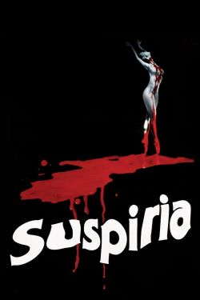

My favourite movie genre is horror. I watched a lot of classic horror
movies with my dad when I was growing up, including some I was way too
young for. The first one I remember watching was The Exorcist when I was
5 or 6. My parents thought I was asleep and put it on. I was fascinated
by it, though, of course, I didn't really understand it at that age. I
still haven't seen The Exorcist as an adult, though I keep meaning to
watch it again.
My favourite horror tends to be set in remote places like the Arctic and
space. The Arctic is so vast and unforgiving that you don't really need
anything supernatural to make it frightening, though I do love a
monster. Space has always terrified me for similar reasons, as well as
the fact that we know so little about it.
I also like creepy small towns and isolated villages, especially if
there's a cult or witchcraft involved. Folk horror is probably my
favourite horror subgenre. I'm really interested in folklore, paganism,
and history, so I like to see those things represented in horror.
This movie feels like a terrible dream.
Wonderful creepy sets. Lots of gore. Sam Neill.
Very beautiful cinematography and soundtrack.
90s Lovecraft inspired horror staring Sam Neill, what's not to
like?
A modern feminist movie that perfectly captures the aesthetic of
the 60s.
I first watched this on a plane surrounded by people, and it still
completely entranced and terrified me.
A childhood favourite. It doesn't hold up perfectly but it's still
very nostalgic for me. Beautiful costumes.

Stunning cinematography and iconic soundtrack. I don't generally
like Dario Argento films, but this one's amazing.
An amazing classic that feels like it was made just for me. Lots
of gory practical effects.
I first watched this in a Russian Folklore class. Very cool
special effects. Natalya Varley's acting is really good.
My favourite horror movie. The setting is amazing, the music is
amazing. Christopher Lee is amazing.
Creepy isolated rural setting. Great performance from Anya
Taylor-Joy.
Non-Horror movies
Other than horror, I like period movies and fantasy. I also love
basically anything by the Coen Brothers. My all-time favourite movie is
Amadeus. When I was a kid, Mozart was a huge special interest for me and
I watched this movie over and over. At first, I was a bit annoyed by the
historical inaccuracies but quickly grew to love the story.
Beautiful, though not at all accurate, depiction of Mozart and
Salieri's lives and relationship. Great acting and, of course,
music.
A combination of hilarious and terrifying. The main character is
absolutely infuriating but also kinda relatable to me.
Dark comedy from Terry Gilliam set in a surreal distopian future.
Very cool aesthetic.
Very accurate depiction of life in Minnesota.
David Bowie's music, the costumes, the puppets, all so good.
My favourite movie when I was a kid, I watched it hundreds of
times and it still holds up. Beautiful animation and story.
Every winter I cook a big meal, enjoy some "pipeweed", and spend a
day rewatching the whole trilogy with friends/family.
This movie started my obsession with 18th-century fashion. Very
good soundtrack.
Very beautiful. I want to be Tilda Swinton, living hundreds of
years and constantly changing gender.
A classic. So many quotable lines.
My favourite Studio Ghibli film. When I was little, I used to run
around with a "spear" (stick) pretending I was San.
I don't really know how to describe this movie or why I like it
but it is very good.
To
watch
I meant to watch Midsommar when it came out but never got around
to it, and somehow I still keep forgetting.
I don't know much about Berberian Sound Studio, but it was scored
by my favourite band, Broadcast.
This movie looks like my kind of thing, and everyone I know loves
it.

 Back
Back